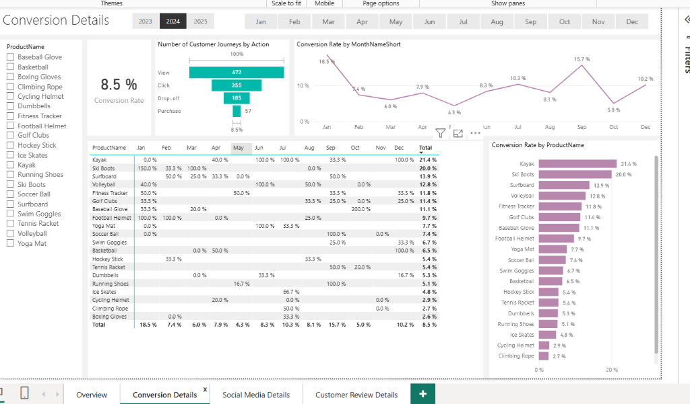
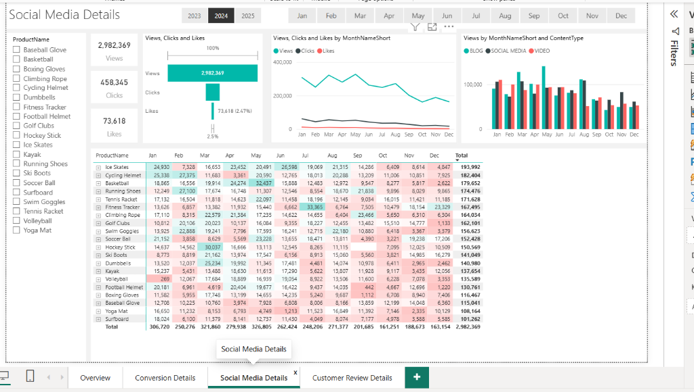
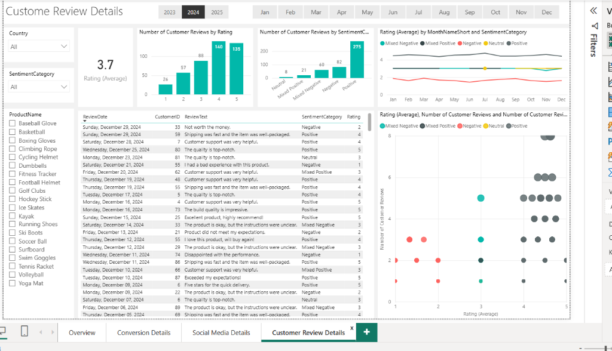

ShopEasy Marketing Analytics
Multi-Channel Marketing Performance & Conversion Funnel Optimization
ShopEasy is an online retail business experiencing declining customer engagement and falling conversion rates despite active marketing spend. This project engineered a centralized 4-dashboard analytics ecosystem to diagnose conversion funnel drop-offs, track 2.98M+ marketing impressions, identify a severe seasonal trough in May (4.3%) vs. January peak (18.5%), and evaluate customer sentiment across post-purchase reviews.
The Business Challenge
Understanding the disconnect between ad spending and conversion outcomes.
What Was Happening
ShopEasy was launching continuous online marketing campaigns across channels, but observed diminishing user engagement, stagnant purchases, and declining store-wide conversion rates.
Why It Mattered
Customer Acquisition Costs (CAC) were rising without matching revenue returns. Marketing dollars were being spent without clarity on which campaign formats or products yielded positive margins.
What Needed To Be Solved
Management lacked visibility into exact conversion funnel drop-off points, seasonal volatility drivers, and the qualitative customer sentiment behind a sub-4.0 average feedback score.
Project Objectives & Target KPIs
Structuring three operational pillars backed by measurable quantitative metrics.
Increase Conversion Rates
- Identify key friction points in the multi-stage conversion funnel.
- Analyze product-level conversion variations across inventory.
- Recommend UX and checkout optimizations to minimize drop-offs.
Enhance Customer Engagement
- Analyze engagement trends across 2.98M social media impressions.
- Evaluate seasonal engagement patterns (Q1 vs. Q4 decay).
- Identify top-converting content types and high-performing products.
Improve Customer Feedback
- Analyze star-rating distributions against the 4.0 benchmark.
- Classify positive (275) vs. negative (82) review sentiment.
- Pinpoint recurring customer pain points to drive product quality.
Analytical Approach: Full Customer Journey
Mapping raw data touchpoints through an end-to-end e-commerce funnel.
Acquisition & Social Reach
Extracted campaign impression data, click metrics, and engagement volumes (views, likes, CTR) to assess campaign resonance and top-of-funnel reach across the full calendar year.
Conversion & Funnel Tracking
Traced user progression from initial site landing to checkout completion. Analyzed monthly fluctuations, product category conversion rates, and identified major drop-off leakage.
Feedback & Post-Purchase Sentiment
Evaluated customer reviews, star ratings, and sentiment distribution (275 positive vs. 82 negative) to diagnose the root causes of the 3.7/5 customer rating deficit.
The 4-Tier Dashboard Ecosystem
A purpose-built suite of business intelligence views tailored for executives, marketers, and product managers.
Central Marketing Health Dashboard
Serves as the executive cockpit, aggregating high-level marketing performance indicators into a unified view. Allows management to monitor conversion health, total reach, and feedback trends in real time.

Funnel Drop-Off & Leakage Analysis
Isolates the specific stages where prospective buyers abandon the purchasing journey. Traces customer journeys through View (672) → Click (355) → Drop-off (185) → Purchase (57).

Social Campaign & Content Engagement
Examines how marketing content resonates across channels and media formats. Analyzes 2,982,369 views, 458,345 clicks, and 73,618 likes.

Voice of the Customer & Review Sentiment
Quantifies qualitative customer feedback using Python NLP sentiment scoring and Power BI visualizations across 357 verified customer reviews.
Key Analytical Findings
Data-backed patterns uncovered across seasonal, product, and sentiment dimensions.
January Conversion Surge
Conversion peaked at 18.5% in January, driven by New Year fitness campaigns and winter sports equipment demand. Demonstrates strong seasonal buyer intent.
May Conversion Slump
Conversion hit an annual low of 4.3% in May, despite ongoing ad spend. Signals a misalignment in transitional spring ad messaging and offer positioning.
Social Reach with 15.37% CTR
Marketing generated 2.98M views, 458K clicks, and 73.6K likes. Engagement proved strong at the top of the funnel but suffered from H2 content decay.
Rating Below 4.0 Goal
Customer satisfaction averaged 3.7/5.0. While positive reviews dominated (275 vs. 82), negative reviews repeatedly highlighted recurring post-purchase friction.
High-Performing Product Categories
Products such as Kayaks, Ski Boots, and Surfboards consistently outperformed baseline conversion rates, indicating high purchase intent for specialized outdoor gear over general merchandise.
Actionable Business Recommendations
Translating analytical findings into concrete marketing, product, and operational initiatives.
Optimize Funnel Drop-off Points via UX
Streamline checkout navigation, reduce form fields, and introduce transparent shipping cost indicators to minimize drop-offs between cart addition and final transaction.
Reallocate Ad Spend to High-Converting Lines
Shift paid ad budget toward validated high-converting product categories (Kayaks, Ski Boots, Surfboards) to maximize return on ad spend (ROAS).
Restructure Spring & Seasonal Campaigns
Redesign marketing strategies during traditionally weak periods like May. Introduce targeted promotional bundles and early summer kick-off incentives.
Refine Social Content Formats & CTA Placement
Combat second-half content decay by testing dynamic video formats, user-generated content, and clear call-to-action buttons to maintain the 15.37% CTR benchmark.
Remediate Recurring Negative Review Drivers
Establish a direct feedback loop with operations to resolve the specific product and delivery pain points highlighted across the 82 negative customer reviews.
Implement Continuous Weekly KPI Cadence
Deploy the 4-dashboard suite into regular operational routines with weekly executive reviews to track conversion anomalies before they impact quarterly margins.
Business Value & Decision Support
How this business intelligence solution empowers data-driven operational leadership.
Marketing Decision Support
Eliminates guesswork in ad budget allocation by providing transparent visibility into click-through and conversion performance by channel.
Seasonal Campaign Planning
Enables marketing teams to forecast demand surges (January) and proactively deploy countermeasures during historical dips (May).
Product Merchandising Strategy
Identifies high-converting flagship inventory to feature prominently in campaigns, optimizing catalog profitability.
Customer Experience & Retention
Connects qualitative customer sentiment with concrete operational fixes to drive ratings toward the 4.0+ benchmark.
Project Gallery
Comprehensive visual documentation of the four specialized analytical views.
Turning Disconnected Data into Commercial Clarity
The ShopEasy project demonstrates how Business Information Systems thinking elevates standard data analytics. By synthesizing top-of-funnel social metrics (2.98M views), transactional conversion performance (8.5% avg CR), and customer sentiment (357 reviews) into a modular 4-tier dashboard ecosystem, this solution provided leadership with the clarity needed to fix funnel leakage and direct ad budgets toward high-performing product lines.